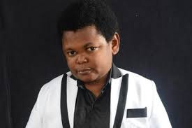

SHOURYA SHARMA ji
4TH PASS ( HTML , CSS )
contact no: 9179691883
Email: Shourya1492@gmail.com

CARRER OBJECTIVE
To be part of a progressive organization and an enthusiastic work environment that has a scope of enhancing my knowledge and skills so that I can reach the pinnacle in the computing field with determination, dedication and hard work.
EDUCATION
| Standard |
School |
University Board |
Marks obtained |
Year of passing |
| 4th |
st.Mary's Inter
collage etawah U.p
|
CBSE |
90% |
2019-2020 |
| Intermediate |
st.Mary's Inter collage etawah U.p |
CBSE |
? |
2027-2028 |
THECNICAL SKILLS
Language:HTML,CSS
MS Word
Comfortable with operating system - windows
PROJECT DESCRIPTION
I made a online resume by HTML5 , CSS 3
I made a wether app with HTML 5,CSS 3 (NOT WORKING) (BUT RESPONSIVE)
EXTRA CURRICULAR ACTIVITY.
• Actively participated in various sports like Football,cricket.
INTERPERSONAL SKILLS
• Ability to work in a team as well as individual.
• Ability to learn new skills quickly and accurately.